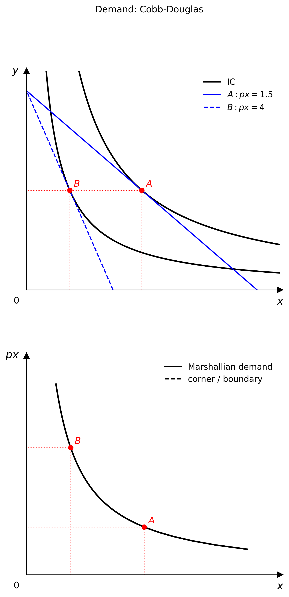

Quick Start
Minimal example
from econ_viz import Canvas, levels, solve
from econ_viz.models import CobbDouglas
model = CobbDouglas(alpha=0.5, beta=0.5)
eq = solve(model, px=2.0, py=3.0, income=30.0)
lvls = levels.around(eq.utility, n=5)
cvs = Canvas(x_max=20, y_max=15, x_label="x", y_label="y",
title=r"Cobb-Douglas $x^{0.5} y^{0.5}$")
cvs.add_utility(model, levels=lvls)
cvs.add_budget(2.0, 3.0, 30.0, fill=True)
cvs.add_equilibrium(eq, show_ray=True)
cvs.save("cobb_douglas.png")

Step by step
Choose a model
Pick a utility function from econ_viz.models. See the Model catalogue for the full list.
Solve for the equilibrium
solve() returns an Equilibrium named tuple with fields x, y, utility, and bundle_type.
from econ_viz import solve
eq = solve(model, px=2.0, py=3.0, income=30.0)
print(eq.x, eq.y, eq.utility) # e.g. 7.5 5.0 5.303
Choose indifference-curve levels
Build the canvas
Add layers
Canvas methods return self, so calls can be chained:
cvs.add_utility(model, levels=lvls)
cvs.add_budget(2.0, 3.0, 30.0, fill=True)
cvs.add_equilibrium(eq, show_ray=True)
Export
Using the LaTeX parser
from econ_viz import parse_latex, Canvas, levels, solve
model = parse_latex(r"x^{0.4} y^{0.6}")
eq = solve(model, px=2.0, py=3.0, income=30.0)
lvls = levels.around(eq.utility, n=5)
Canvas(x_max=20, y_max=15) \
.add_utility(model, levels=lvls) \
.add_budget(2.0, 3.0, 30.0) \
.add_equilibrium(eq) \
.save("figure.png")
Multi-panel figures
Figure lets you compose several Canvas panels into one layout.
from econ_viz import Figure, Layout, levels, solve
from econ_viz.models import CobbDouglas
fig = Figure(
Layout.SIDE_BY_SIDE,
x_max=20,
y_max=15,
x_label="x",
y_label="y",
title="Before / After Price Change",
shared_y=True,
)
cases = [
(CobbDouglas(alpha=0.5, beta=0.5), 2.0, 3.0, 30.0, r"Before: $p_x=2$"),
(CobbDouglas(alpha=0.3, beta=0.7), 4.0, 3.0, 30.0, r"After: $p_x=4$"),
]
for idx, (model, px, py, income, title) in enumerate(cases):
eq = solve(model, px=px, py=py, income=income)
panel = fig[idx]
panel.ax.set_title(title)
panel.add_utility(model, levels=levels.around(eq.utility, n=5))
panel.add_budget(px, py, income, fill=True)
panel.add_equilibrium(eq, show_ray=True)
fig.save("comparison.png")
Demand diagrams
Use PricePath plus DemandDiagram to link the goods-space optimum to Marshallian demand.
from econ_viz import DemandDiagram, LinearBudget, PricePath
from econ_viz.models import CobbDouglas
model = CobbDouglas(alpha=0.5, beta=0.5)
budget = LinearBudget(px=2.0, py=2.0, income=40.0)
path = PricePath(model, budget=budget, price="px", price_range=(0.8, 6.0), n=40)
fig = DemandDiagram(path, title="Demand: Cobb-Douglas")
fig.add_marshallian_panel(price_markers=[1.5, 4.0])
fig.save("demand.png")
